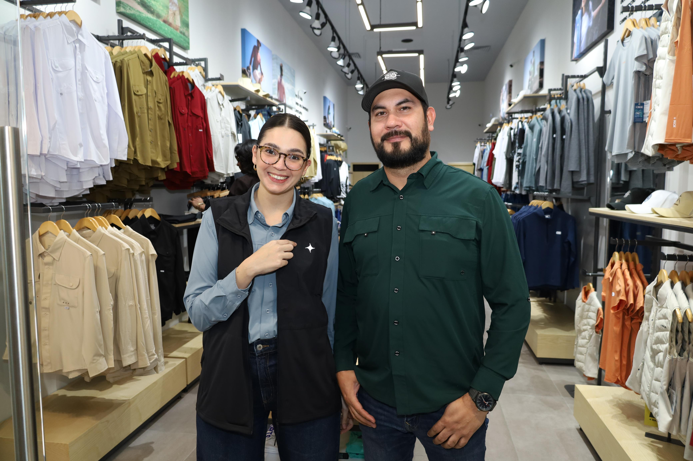

Pachuca, Hidalgo, 04 de febrero - La moda deportiva y el espíritu aventurero encuentran su nuevo punto de encuentro en Pachuca con la apertura de la tienda número 46 de Maja Sportswear en Galerías Pachuca. Con un estilo auténtico y funcional, esta marca 100% mexicana ha revolucionado la manera en que vivimos el deporte y las actividades al aire libre, ofreciendo prendas diseñadas para quienes buscan un equilibrio entre rendimiento, comodidad y moda.
En los últimos cinco años, Maja Sportswear ha crecido un 300%, posicionándose como una de las marcas más innovadoras
en el segmento del athleisure. Inspirada en las bellezas naturales del país, la marca combina diseño y funcionalidad
para crear prendas que se adaptan tanto a la vida urbana como a la exploración de nuevos horizontes.
Más que moda: un estilo de vida.

La apertura de Maja Sportswear en Pachuca no solo responde a la creciente demanda de ropa deportiva de alto rendimiento, sino que también busca convertirse en un referente de estilo para quienes valoran la versatilidad en su vestimenta diaria. Desde cómodas chamarras y leggings con tecnología avanzada hasta piezas ideales para un fin de semana de aventura, cada prenda está diseñada para acompañarte en cada desafío, sin perder el toque de elegancia y autenticidad.
"Nos emociona acercar nuestra propuesta a la comunidad de Pachuca, un lugar donde la pasión
por la actividad física y el contacto con la naturaleza es parte esencial del estilo de vida.
Creemos en la moda que inspira y que motiva a las personas a descubrir su mejor versión",
comentó Jonathan Reyes, Coordinador de Marketing de Maja Sportswear.
Un nuevo destino para los amantes del movimiento y la moda
Con esta apertura, Maja Sportswear no solo fortalece su presencia a nivel nacional,
sino que también reafirma su compromiso de ofrecer propuestas innovadoras que fusionan
la moda y la funcionalidad. Porque moverse y verse bien nunca habían ido tan de la mano.
Acerca de Maja Sportswear
Maja Sportswear es una marca 100% mexicana de ropa deportiva outdoor fundada en 2019 en Culiacán, Sinaloa, por Ignacio de Nicolás. Su origen surgió de la pasión por la pesca y el deseo de crear prendas funcionales y de alto rendimiento para las actividades al aire libre.
Lo que comenzó como un hobby rápidamente evolucionó hasta convertirse en una marca reconocida a nivel nacional. Actualmente, Maja Sportswear ofrece una amplia variedad de prendas para dama y caballero diseñadas para diferentes deportes outdoor, como el senderismo, el hiking, el golf, la pesca, el pádel y athleisure, manteniendo un firme compromiso con la calidad, la innovación y la sostenibilidad.
La tecnología es un pilar fundamental en sus diseños. Cada prenda está fabricada con materiales de alto desempeño que incorporan protección UV, secado rápido, telas transpirables y tecnologías anti-bacterial y anti-olor, garantizando máximo confort y funcionalidad para quienes buscan ropa versátil y resistente.
Con un crecimiento del 300% en los últimos cinco años, Maja Sportswear ha logrado posicionarse como un referente en la industria, contando con más de 46 tiendas en México y una sólida presencia en el comercio en línea. La marca ofrece una amplia gama de prendas para hombres y mujeres, incluyendo camisas, camisetas, polos, pantalones, shorts, chamarras, rompevientos, sudaderas, boardshorts, trajes de baño, pijamas y chalecos.
Sus productos están disponibles en tiendas físicas en diversas ciudades de México, así como en su tienda en línea.
Maja Sportswear ha colaborado con destacadas personalidades como Checo Pérez y Usain Bolt, quienes han lucido sus
diseños, consolidando a la marca como un referente en el mundo deportivo.
El diferencial de Maja radica en su inspiración en la naturaleza mexicana, ofreciendo prendas que combinan funcionalidad,
diseño y calidad, adaptándose tanto a la vida urbana como a las actividades al aire libre.